Clínica veterinaria · Angol
El gato no es un perro chico.
Avisa distinto cuando algo anda mal.
- 178reseñas en Google
- 6cosas en que el gato es al revés
- 2días sin comer: ya es urgencia
- 0veterinarias de Malleco con página propia
No es más delicado: avisa distinto
Seis cosas en que el gato es al revés
-
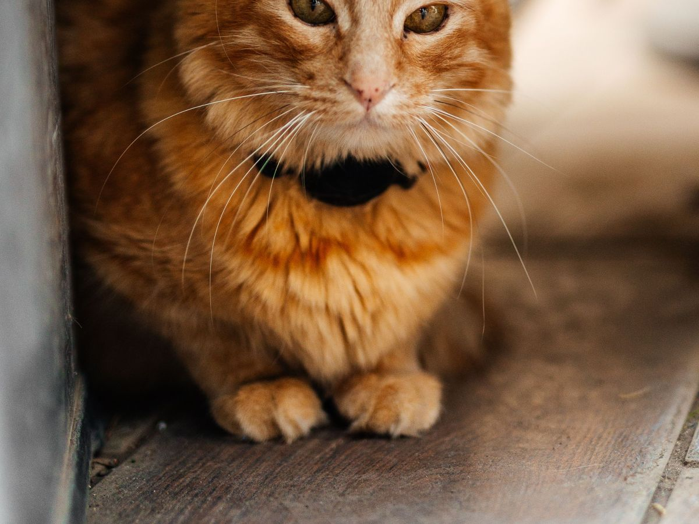
01
Esconde el dolor
Se va a un rincón y deja de hacer cosas.
-
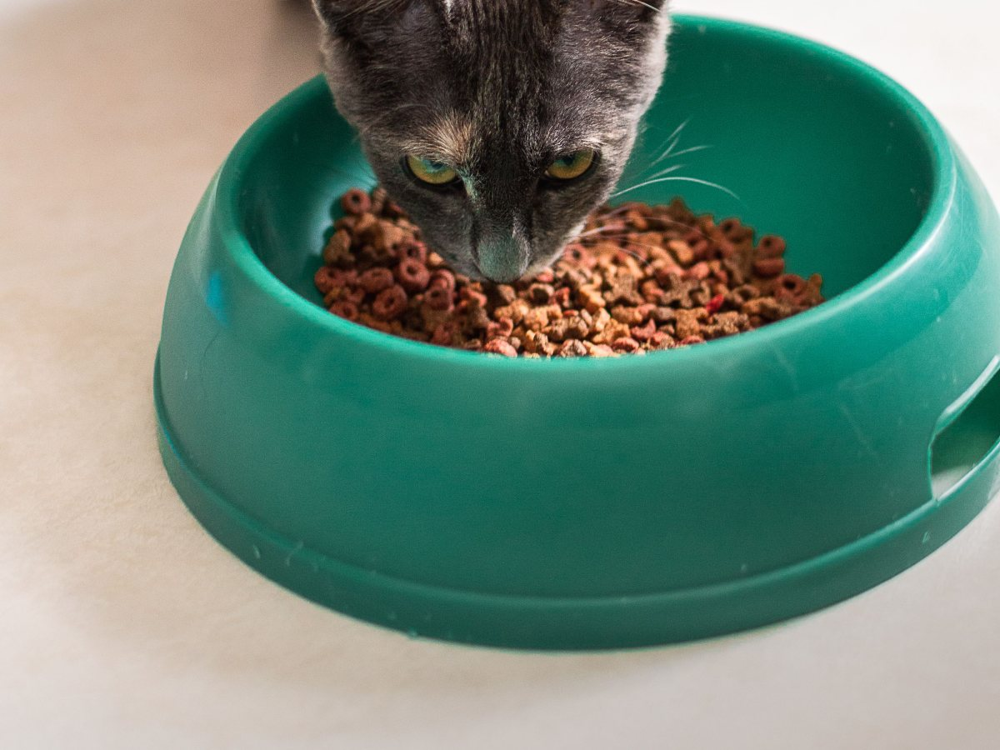
02
No comer es urgencia
Dos días pueden dañarle el hígado.
-
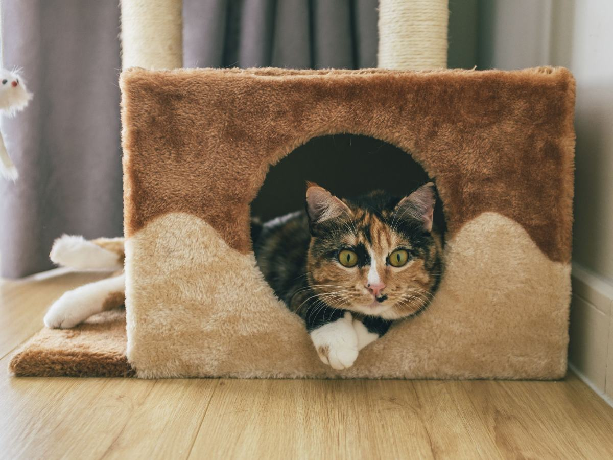
03
La caja de arena
Es su ficha médica: cuánto y cuántas veces.
-
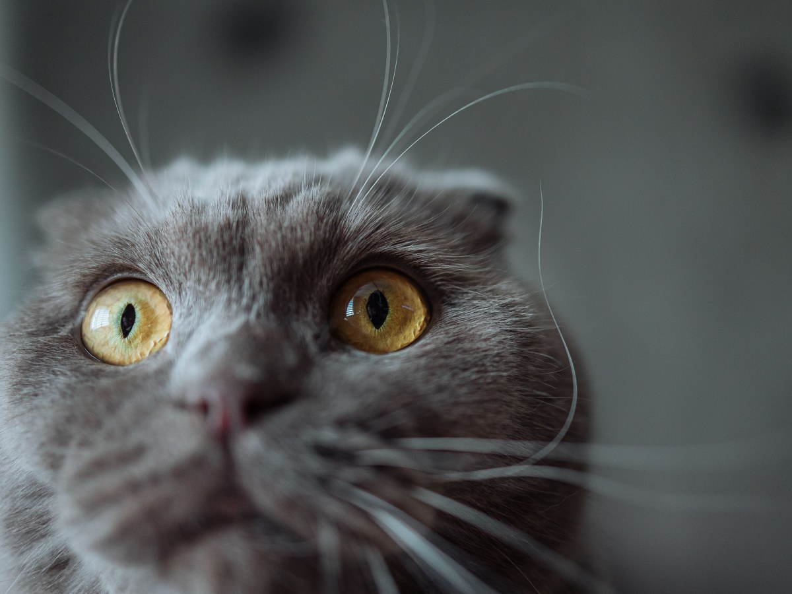
04
Nada de remedios humanos
Un paracetamol puede matarlo.
-
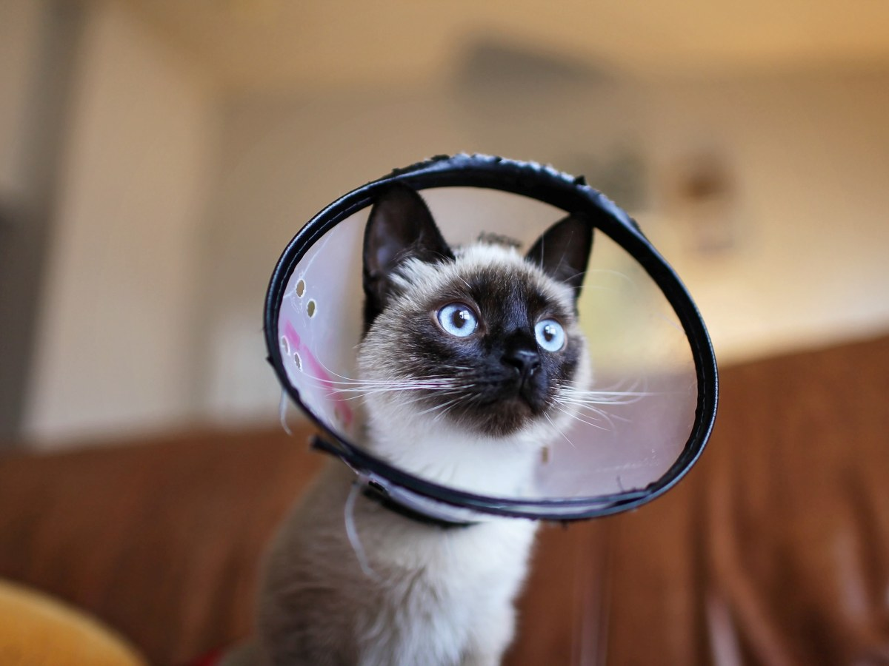
05
El estrés lo enferma
Una mudanza puede darle cistitis.
-
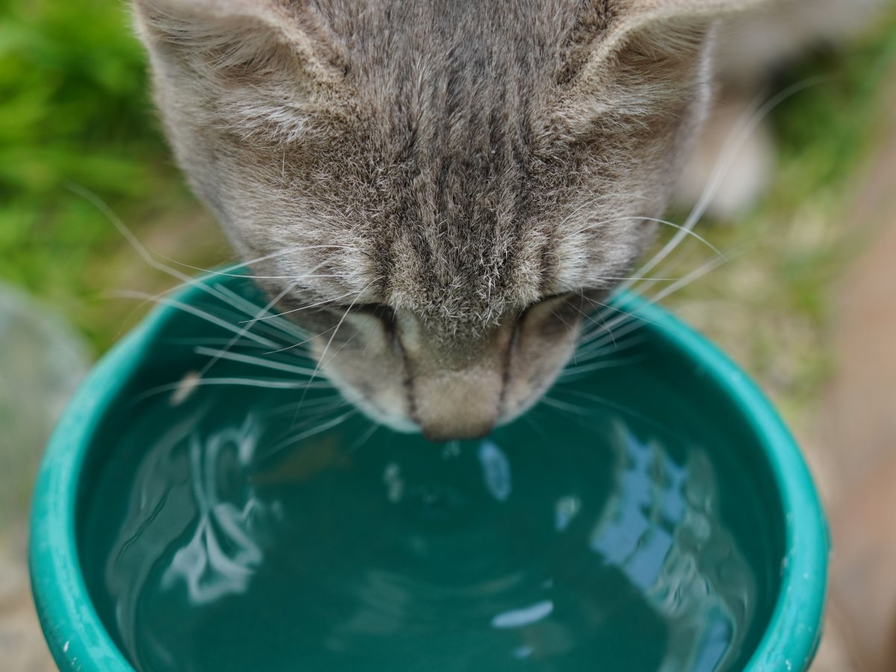
06
Toma poca agua
Agua en varios puntos, lejos de la comida.
No reemplaza la consulta: la firma la clínica.
Un gato escondido que no come es un gato enfermo.
Un animal aterrado se revisa a medias
Cómo traerlo sin drama
- 01
El gato, en canil
En brazos se suelta, y en la calle no se recupera.
- 02
Canil abierto en casa
Todo el año, con una manta adentro.
- 03
Toalla con olor de casa
Y una manta que le tape la vista.
- 04
El perro, correa corta
Nada de extensibles en la sala de espera.
Las revisa la clínica.
«Hace tiempo» no sirve; «desde el jueves, tres veces» sí.
Anote antes de venir
En la consulta
Gatos y perros de Angol
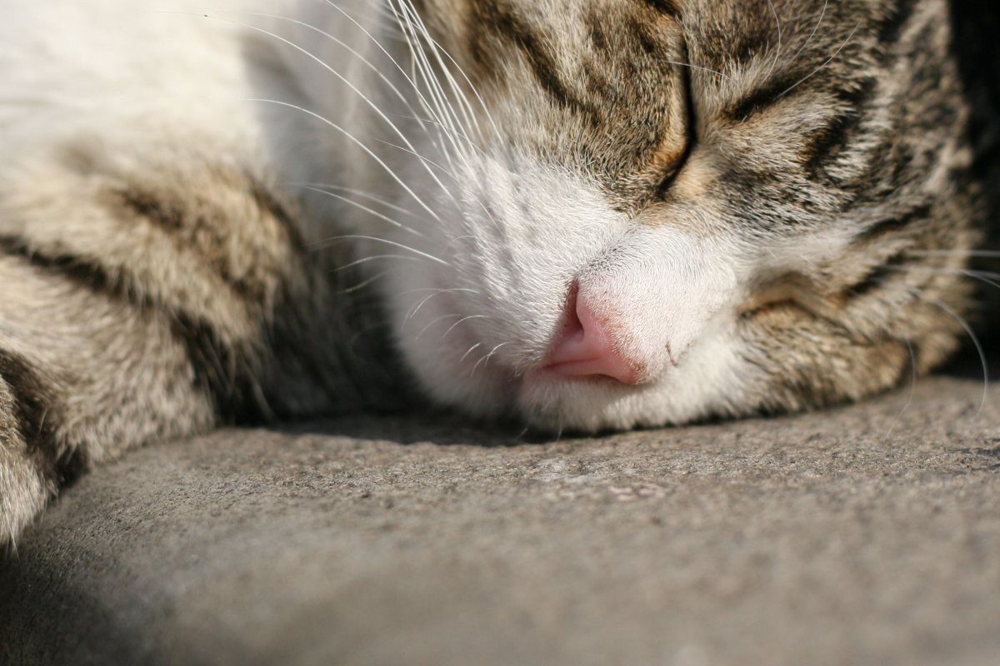
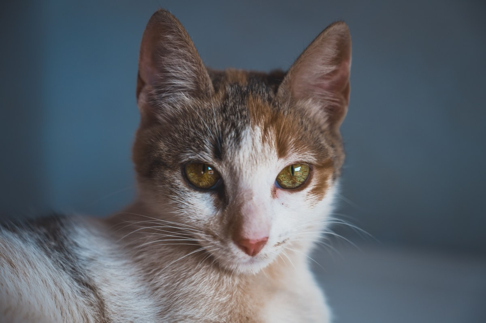
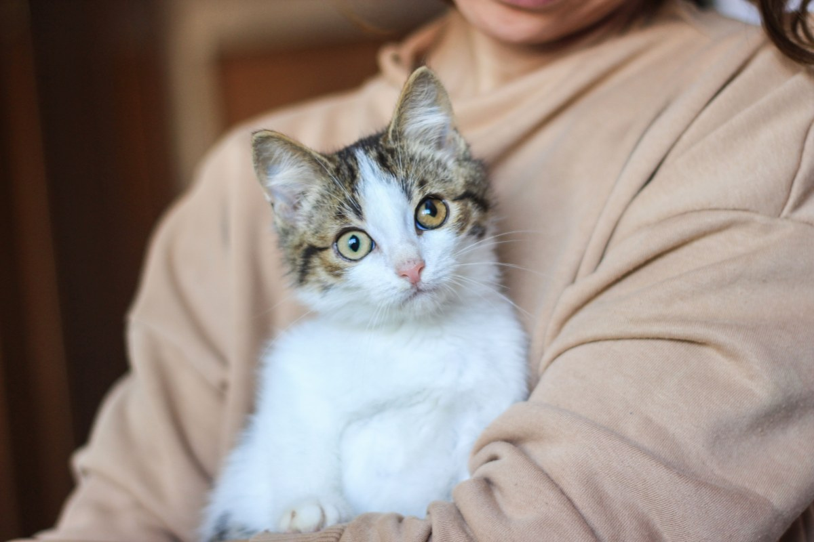
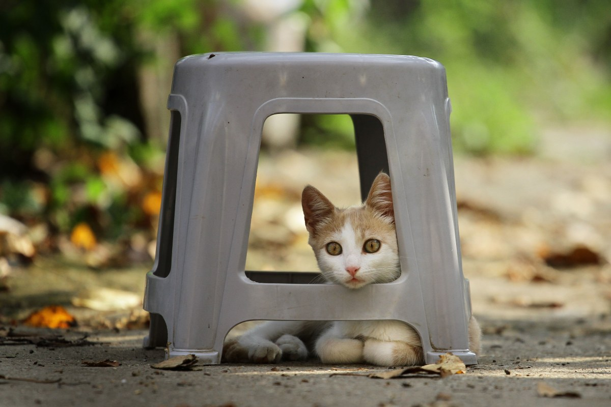
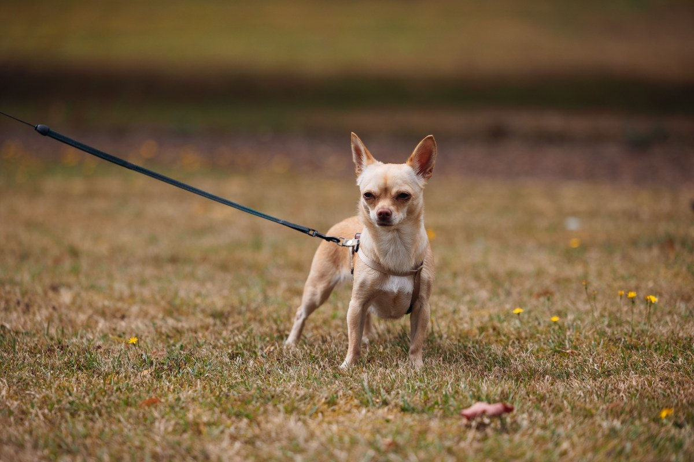
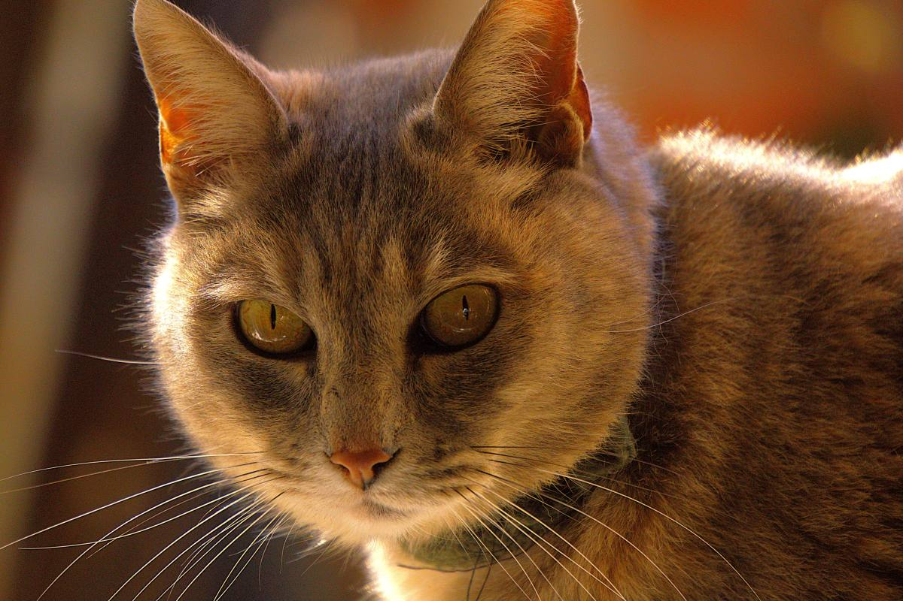
Fotos de referencia: las de la clínica las pone la clínica.
Dónde estamos
Caupolicán 358, Angol
- Dirección
- Caupolicán 358, Angol
- Teléfono
- 45 271 7576
- Horario
- Falta el horario
- Urgencias
- Falta confirmar
Al pedir hora, diga si es control o si el animal está con algo.
Caupolicán 358, Angol Abrir en Google Maps
Para el dueño
Qué es real y qué falta
Lo verificado
El nombre, la dirección, el teléfono y las 178 reseñas.
Lo de ejemplo
Las seis diferencias y las reglas para traerlo: orientación general, a firmar por la clínica.
Lo que falta
El horario, las urgencias y las fotos de la clínica, ojalá con un gato.